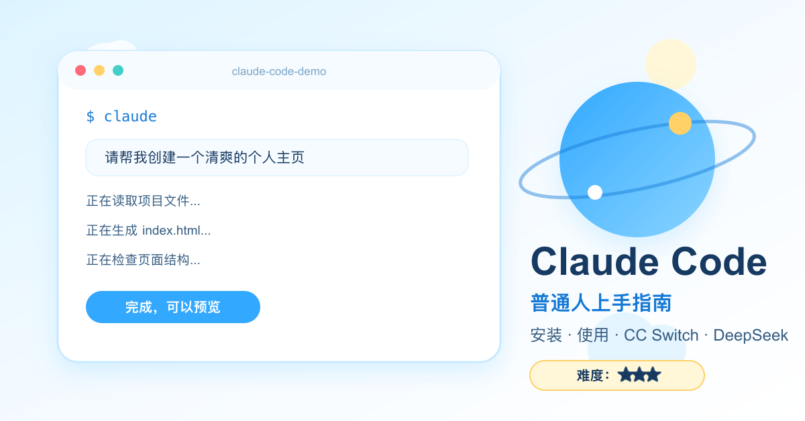
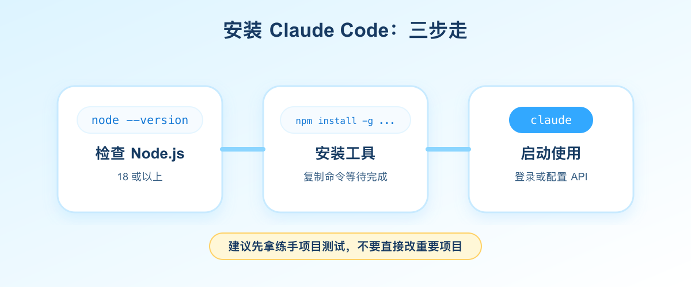
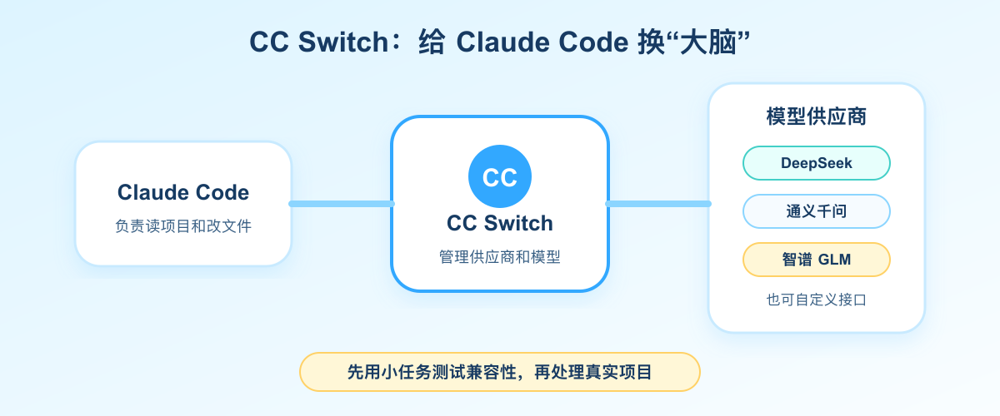

Claude Code 怎么用？普通人也能上手的 AI 编程助手

Claude Code 上手指南
关注微信公众号 AI技趣星球，回复 MF，一起用技术创造乐趣。
照着做还是装不上？关注后私信我，安装和配置问题可以帮你一起排查。
你可能听过一句话：
“Claude Code 写代码很强。”
但你真正去搜时，看到的往往是英文文档、命令行、API Key、环境变量、MCP、Skill。
一堆词砸过来，刚想试一下，就想关掉。
这篇少堆术语，只讲能照着做的步骤，不要求你有编程基础。
我们只解决三个问题：
- Claude Code 到底是干什么的？
- 怎么把它装起来、跑起来？
- 如果官方账号或 API 不方便用，怎么用 CC Switch 接 DeepSeek 这类模型？
一句话结论：Claude Code 不是聊天工具，而是一个会读项目、改文件、跑命令的 AI 编程助手。你把需求说清楚，它能直接在项目里动手。
难度：⭐⭐⭐
需要装 Node.js、复制几行命令、配置一次模型。第一次可能会卡一下，但照着做，普通人也能跑通。
先说人话：Claude Code 像“坐在旁边的程序员助理”
普通 AI 聊天工具像什么？
像你在微信上问朋友：
“这个网页怎么写？”
朋友发你一段建议，剩下的还得你自己打开文件、复制代码、调错。
Claude Code 不太一样。
它更像一个坐在你旁边的程序员助理。你说：
“帮我把这个网页改好看一点，顺便检查有没有报错。”
它可以直接去看你的项目文件，然后修改、运行、发现问题，再继续修。
它能做的事情包括：
所以你可以先记住一句话：
ChatGPT 更像“问答窗口”，Claude Code 更像“能进项目干活的 AI 助手”。
为什么它值得学：不是只因为 Claude 模型强
Claude Code 值得学，不只是因为它能写代码。
更重要的是，它把两个思路带火了：Skill 和 MCP。
Skill：给 AI 的办事说明书
Skill 可以理解成“给 AI 的工作说明书”。
比如你经常写技趣星球的文章，就可以写一份说明：
写文章时：
- 先用生活例子开头
- 不堆术语
- 每段不要太长
- 结尾给一个立刻能做的小动作以后你说“按我的风格写一篇”，AI 就能照着这份说明做。
它不是让 AI 变聪明，而是让 AI 更懂你的习惯。
MCP：AI 世界的 Type-C 接口
MCP 更像“AI 世界的 Type-C 接口”。
以前 AI 想接 GitHub、数据库、浏览器、文件系统，每个工具都要单独适配。
MCP 做的事，是把连接方式统一起来。
工具按 MCP 的规矩提供能力，AI 就能接上去用。
关于 Skill 和 MCP，我们前面写过两篇：
- Skill 是什么？先去 SkillHub 逛一圈就懂了
- MCP：就是我们日常使用的 Type-C 接口
这篇先不展开。你只要知道：Claude Code 不是一个孤立工具，它代表的是“AI 能真正操作电脑和项目”的方向。
安装前先检查：别一上来就复制命令
先确认你的电脑有没有这些东西。
检查 Node.js：
node --version如果能看到类似 v20.x.x、v22.x.x，说明已经装了。
如果提示找不到命令，先去 Node.js 官网 下载 LTS（长期支持版），不要选 Current 尝鲜版。
注意：
第一次练习，建议用一个复制出来的小项目。不要直接在公司项目、客户项目、重要资料目录里试。
安装 Claude Code：三步就够

第一步：安装
打开终端，输入：
npm install -g @anthropic-ai/claude-code装完后检查版本：
claude --version能看到版本号（比如 2.1.x），就说明安装成功。
两个常见安装坑：
1. 不要用
sudo npm install -g。容易把权限搞乱，后面更新、卸载都麻烦。如果报EACCES权限错误，把 npm 全局目录改到用户文件夹即可：``
bash``
mkdir -p ~/.npm-global
npm config set prefix '~/.npm-global'
echo 'export PATH=~/.npm-global/bin:$PATH' >> ~/.zshrc
source ~/.zshrc
npm install -g @anthropic-ai/claude-code
2. 想更新时，再跑一遍同样的安装命令就行。不用记版本号，npm 会帮你装当前最新版。
第二步：进入一个项目目录
找一个练手项目，比如：
cd ~/my-project如果你还没有项目，也可以先建一个空文件夹：
mkdir claude-code-demo
cd claude-code-demo第三步：启动
输入：
claude第一次启动时，它会引导你登录或配置 API。
官方用法通常需要 Anthropic 账号或 API Key。国内用户如果这一步不方便，可以先看后面的 CC Switch 方案。
基础用法：先学 6 个动作
刚开始不要贪多。
你会下面这几个，就能完成 80% 的入门操作。
一个最适合新手的练习是：
请先扫描这个项目，告诉我：
1. 这是一个什么项目
2. 主要文件分别干什么
3. 我作为新手应该先看哪 3 个文件等它解释完，你再说：
请把 README.md 改得更适合新手阅读。
结构包括：项目简介、安装方法、运行方法、常见问题。
先给我计划，确认后再改文件。注意最后一句：
先给我计划，确认后再改文件。
这是新手用 Claude Code 的关键习惯。
你先让它说清楚打算怎么做，再让它动手。这样不容易一上来改乱。
CC Switch：给 Claude Code 换一个“大脑”
如果你没有 Anthropic API Key，或者想接 DeepSeek、通义千问、智谱 GLM 这类模型，可以看 CC Switch。

CC Switch 是什么？
CC Switch 是一个开源桌面工具，用来管理 Claude Code、Codex、Gemini CLI 等命令行 AI 工具的模型供应商。
你可以把它理解成一个“模型切换器”：
Claude Code 负责干活，CC Switch 负责告诉它用哪个模型。
常见配置是：
安装 CC Switch
去 GitHub Releases 下载对应系统安装包：
macOS 用户也可以用：
brew install --cask cc-switch装好后打开应用，按界面提示添加供应商。
接 DeepSeek 的大致步骤
DeepSeek 官方已经提供了 Claude Code 接入文档。2026 年起，不要再用旧的 deepseek-chat 当主模型，新版要按下面这套来配。
- 去 DeepSeek 开放平台 创建 API Key
- 打开 CC Switch，添加供应商，选择 DeepSeek 预设
- 填入 API Key
- 按下面表格核对关键项（CC Switch 预设里通常已填好，但建议你肉眼确认一次）：
- 点击启用，关掉旧终端窗口，重新开一个，再运行：
claude如果 CC Switch 已经接管配置，Claude Code 就会通过 DeepSeek 来工作。
不用 CC Switch？手动配环境变量也行
如果你更习惯命令行，DeepSeek 官方文档给的是这套（macOS / Linux）：
export ANTHROPIC_BASE_URL=https://api.deepseek.com/anthropic
export ANTHROPIC_AUTH_TOKEN=<你的 DeepSeek API Key>
export ANTHROPIC_MODEL=deepseek-v4-pro[1m]
export ANTHROPIC_DEFAULT_OPUS_MODEL=deepseek-v4-pro[1m]
export ANTHROPIC_DEFAULT_SONNET_MODEL=deepseek-v4-pro[1m]
export ANTHROPIC_DEFAULT_HAIKU_MODEL=deepseek-v4-flash
export CLAUDE_CODE_SUBAGENT_MODEL=deepseek-v4-flash
export CLAUDE_CODE_EFFORT_LEVEL=max配完后同样要新开一个终端，再进项目目录运行 claude。
想持久保存，可以写进 ~/.claude/settings.json 的 env 字段，或者写进 ~/.zshrc。
接 DeepSeek 最容易踩的 3 个坑
坑一：模型名写旧了
网上很多旧教程还在写 deepseek-chat 或 deepseek-reasoner。接 Claude Code 时，主模型请用 deepseek-v4-pro[1m]，子任务用 deepseek-v4-flash。名字差一个字母，表现就是“能启动但一直报错”。
坑二：API 地址填错
DeepSeek 普通聊天接口和 Claude Code 用的不是同一个地址。Claude Code 必须填：
https://api.deepseek.com/anthropic坑三：改完配置没重启终端
CC Switch 或环境变量改完后，旧终端窗口不会自动刷新。关掉重开，或者 source ~/.zshrc，再试。
注意：
DeepSeek 接 Claude Code 属于第三方兼容方案，不是 Anthropic 官方支持的路径。不同模型对工具调用、长任务的稳定程度也不一样。第一次建议先做小任务：解释项目、改 README、修一个简单报错。不要一上来让它重构整个项目。
一个完整练习：让它帮你整理项目
找一个不重要的小项目，打开终端：
cd ~/my-project
claude然后复制这段：
你先不要改文件。
请扫描这个项目，输出：
1. 项目是做什么的
2. 主要目录和文件说明
3. 当前最明显的 3 个问题
4. 建议我先改哪一个，为什么等它回答后，再复制这段：
现在只改 README.md。
要求：
1. 面向第一次打开项目的人
2. 用中文
3. 包含安装、运行、常见问题
4. 不要改其他文件
改完后告诉我改了哪些内容。这就是 Claude Code 最舒服的用法：
- 先让它看
- 再让它计划
- 最后只允许它改一个小范围
新手一定要从小范围开始。你越会限制范围，它越像靠谱助理。
新手最容易踩的 5 个坑
坑一：让它一次改太多
不要这样说：
帮我优化整个项目。建议这样说：
先只看项目，不改文件。
列出 3 个最值得改的点，我确认后再动手。坑二：不看改动就继续
每次它改完，你最好看一眼：
git diff如果你还不会 Git，也至少打开文件看看有没有明显不对。
坑三：把隐私内容发给模型
不要把这些东西交给任何 AI：
- 身份证
- 手机号名单
- 客户资料
- 合同原文
- 内部账号和密码
- 公司未公开代码
能不能发，有个简单判断：
能发普通工作群的东西，才适合发给 AI。
坑四：把模型当神
Claude Code 会犯错。
它可能删错文件、理解错需求、装错依赖，也可能写出看起来很对但实际跑不通的代码。
所以新手要养成一个习惯：
小步改，小步看，小步确认。
坑五：只看教程，不动手
这类工具，光看没用。
你必须拿一个小项目跑一次，才会真正明白它的价值。
今天就试这个
如果你只想花 10 分钟，按这个顺序来：
npm install -g @anthropic-ai/claude-code
claude --version
mkdir claude-code-demo
cd claude-code-demo
claude国内用户如果官方登录不方便，先装好 CC Switch，按上文 DeepSeek 表格配好，再回来跑下面这段对话。
进入后复制：
请帮我创建一个最简单的个人主页。
要求：
1. 只有 index.html 一个文件
2. 标题是“我的第一个 AI 辅助网页”
3. 页面里有一句自我介绍
4. 风格清爽，不要复杂
先告诉我你准备怎么做，等我确认后再创建文件。跑通这一步，你就已经跨过最难的门槛了。
今天的小结
记住 3 件事就够了：
- Claude Code 是「能进项目干活的 AI 助手」，不是普通聊天窗口
- 安装就一行
npm install -g @anthropic-ai/claude-code，装完用claude --version确认成功 - 接 DeepSeek 时，主模型填
deepseek-v4-pro[1m]，接口地址填https://api.deepseek.com/anthropic
关注微信公众号 AI技趣星球，回复 MF，我会继续把这类工具拆成普通人也能照做的教程。
参考资料
- Claude Code 官方安装文档
- Claude Code 进阶安装说明（含 npm 升级、权限问题排查）
- DeepSeek 官方 · Claude Code 接入指南
- Claude Code MCP 文档
- Claude Code Skills 文档
- CC Switch GitHub Releases
版本说明：本文 DeepSeek 模型名以 2026 年 5 月为准。Claude Code 迭代很快，装完以你本机
claude --version显示的为准。